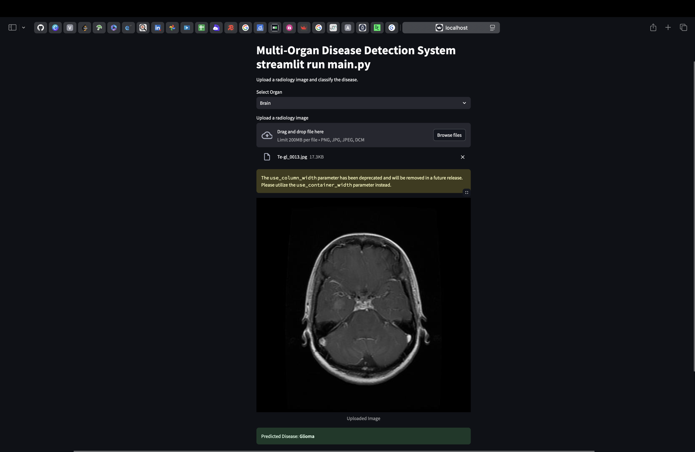
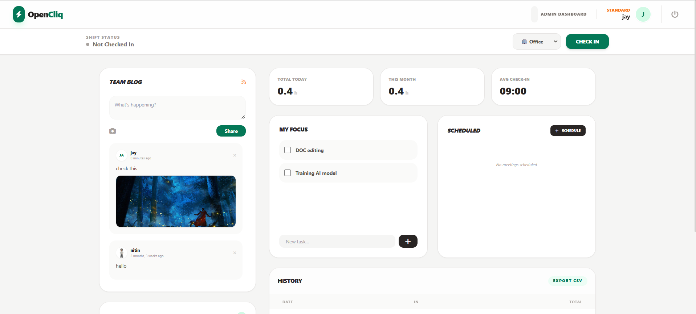
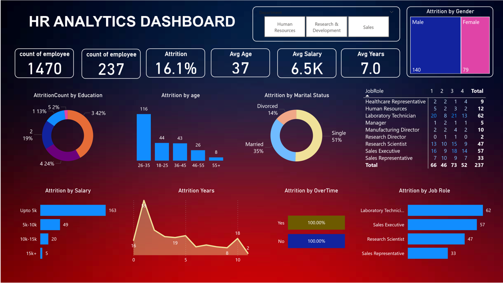
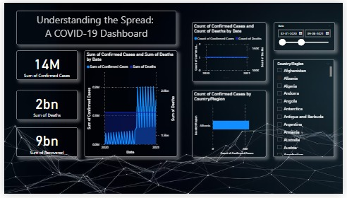

Core Expertise
Programming & Data
- Python (Pandas, NumPy)
- SQL (PostgreSQL, MySQL)
- Automated Data Validation
- JSON, HTML, CSS, JS
Generative AI & ML
- LLMs, RAG, Ollama
- LangChain Orchesration
- TensorFlow, CNN, VGG16
- Scikit-Learn (SVM, KNN, PCA)
Analytics & BI
- Power BI (DAX, ETL)
- Interactive Dashboards
- KPI & Metric Design
- Matplotlib, Seaborn
Frameworks & Tools
- Django Web Framework
- Git & GitHub Pipelines
- Postman REST API Testing
- VS Code & Jupyter Notebook
Professional Experience
Associate Program Mentor (AI & ML)
ERA Foundation - ComedKares
March 2026 - Present, Bangalore
- Mentoring students through advanced AI/ML internship programs and architectural design patterns.
- Facilitating university-aligned Innovation Project Work (IPW) engineering classes.
- Evaluating system architectures, algorithmic model selection, and debugging code execution.
Trainee Engineer
Ivyis Technologies Pvt. Ltd
January 2026 - February 2026, Bangalore
- Engineered structural backend modules and operational database management logic.
- Designed robust relational CRUD actions and automated data integrity validation systems.
- Collaborated on technical specifications to bridge functional business requirements and backend endpoints.
Business Analyst Intern
Dave AI
September 2025 - December 2025, Bangalore
- Extracted, cleansed, and structured incoming unstructured data arrays utilizing REST APIs.
- Generated rigorous analytic reporting systems alongside active automation script testing.
- Designed granular organizational KPIs to drive business insights for digital transformation.
Data Science Intern
Accolade Tech Solutions
May 2024 - June 2024, Mangalore
- Built an end-to-end Computer Vision Deep Learning classifier tracking leaf structures with TensorFlow.
- Reached 95% evaluation accuracy via tailored convolutional layer processing (CNN).
- Managed matrix manipulation, missing feature cleanups, and vector resizing with NumPy & Pandas.
Featured Technical Projects

Multi-Organ Disease Diagnosis
A medical image classification engine built with VGG16 (CNN) evaluating health anomalies from X-Rays, MRIs, and CT Scans. Served via a Streamlit UI.
Learn More
OpenCliq – Full-Stack Enterprise System
A complete Django administration platform showcasing granular multi-tenant geofencing tracking, automated logging, and role access structures.
Learn MoreVoice-Controlled Conversational AI
Hands-free smart orchestration system merging dynamic token parsing via SpaCy NLU with LLM contexts for conversational generation.
Learn More
HR Analytics & Retention Engine
Interactive Business Intelligence pipelines built on Power BI tracking employee metrics, turnover indexes, and demographic matrices via DAX expressions.
Learn More
Predictive Plant Pathogen Identification
Deep Learning neural network reaching 95% species tracking validation bounds on visual anomalies using Keras execution structures.
Learn More
Health Sensor Processing Framework
Analytical stack combining exploratory analysis via Pandas/Seaborn with cross-linked Power BI storytelling mapping biometric vital distributions.
Learn More
COVID-19 Global Impact Hub
Epidemiological presentation system managing advanced ETL pipelines, data source unions, and distribution metrics across global timelines.
Learn More
Iris Flower Clustering Validation
Morphological dimensional modeling exploring data boundaries and feature vectors mapping variance distributions visually.
Learn MoreEducation & Academic Merits
B.Tech in Artificial Intelligence & Machine Learning
Srinivas University Institute of Engineering and Technology
2021 - 2025 • First Class with Distinction (8.80 CGPA)
Professional Credentials
- Artificial Intelligence & Python Mastery – FUEL
- Crash Course in Machine Learning Execution – Great Learning
- Hands-on Deep Learning on Artificial Neural Networks – Infosys
How I Add Value
Technical Mentorship & Training
Breaking down deep learning abstractions, teaching model optimization frameworks, and keeping project implementations structurally aligned with engineering standards.
Backend Development & Automation
Architecting clean Django patterns, securing relational transactional storage layouts, and scripting modular components to optimize manual process pipelines.
GenAI Integration & BI
Designing responsive localized chat agents using LLM workflows, configuring retrieval augmentations (RAG), and providing actionable insights through interactive dashboards.
Let's Connect!
I'm always open to talking about AI architecture, backend design systems, technical mentorship opportunities, or full-stack pipeline development.